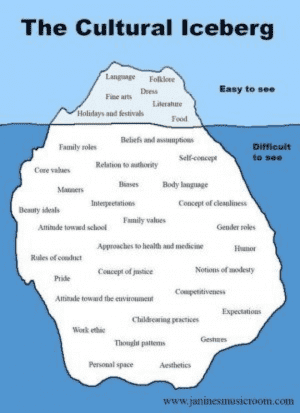

Michael is the author of Staying Married in a Degenerate Age. Follow him on Twitter or Facebook. You can read more of his writing at Honor and Daring.


One of the problems that Western nations are facing is a crisis of national identity. What do these nations stand for besides adherence to abstract concepts such as personal freedom and tolerance? Patriarchal Nationalism offers a distinctive answer to the problem.
2016 French football team
There are three different ways that national identity is understood today:
A nation is its people. For a nation like Japan, national identity is not based on a form of government. Japan is a democracy today, but it was still Japan when it was ruled by a feudal government. This is because the national identity of Japan is inextricably linked to the Japanese people. Most Asian nations have maintained this understanding of national identity.
A nation is its people and its religion. Other nations, such as Israel or the Islamic countries of the Middle East, base their national identity on a combination of ethnicity and religion. It would also be possible for a nation to ignore ethnicity altogether and self-identify solely with a particular religion. However, I am unaware of any modern nation that adopts this view.
A nation is a particular form of government and a set of people who agree with an abstract set of principles. In Western nations (Europe and those nations that have their origin in Europe), a different view of national identity now prevails. These nations do not view themselves as a people or followers of a religion. Rather, their identity is defined by a particular form of government and agreement with abstract concepts such as equality, democracy, freedom, and tolerance.
These nations do not recognize ethnicity or race as playing a role in national identity. The people within a nation are interchangeable with any other group of people provided they assent to the abstract principles. The inhabitants of a nation are viewed as economic units who buy and sell. It is irrelevant whether the economic units come from England, Somalia, China, or Mexico.
Patriarchal Nationalism rejects the idea that people are interchangeable. The identity of a nation must be something more than the acceptance of abstract principles or a set of economic policies. For a nation to cohere over the course of many centuries, it must also be based on culture and genetics.

E.B. Tylor defined culture as “that complex whole which includes knowledge, belief, art, morals, law, custom and any other capabilities and habits acquired by man as a member of society.”
When we think of culture, the first things that jump to mind are language, cuisine, and modes of dress. The conventional wisdom is that if a person learns to speak the language and dress like the natives, they have sufficiently embraced the culture.
But this is a very superficial understanding of culture. It goes much deeper than that. Culture affects a person’s way of viewing and interacting with the world. For example, westerners view women as having a right to not being raped regardless of whether they are chaste or slutty. But some Islamic cultures view women who are not wearing the hijab as being “fair game.” This is why we see things like the mass sexual assaults that occurred in Cologne. Just because someone understands the language or dresses in a western way does not mean that they are western.
Most importantly for a nation, culture influences the voting patterns of people. Franklin Delano Roosevelt’s New Deal, which set the stage for the enormous federal government of today, was only possible because of a coalition of blacks, women, and Jewish and Catholic immigrants.
While culture is essential to national identity, that identity cannot be reduced to culture alone. Genetics is inseparable from national identity. Japan would not be Japan if it replaced its people with Swedish immigrants, even if those immigrants learned Japanese and did their best to try to assimilate Japanese culture in every detail. This does not mean that the Swedes are bad people. Only that they could never replace the Japanese. Furthermore, if Swedes, rather than Japanese, had inhabited the island of Japan for several thousand years, the culture they would have produced would be nothing like Japanese culture. It would be a Swedish culture.
We know this intuitively even though it flies directly in the face of everything we have been taught. But why is this? Why does one group of people produce one unique culture while another group produces an entirely different one?The answer lies in genetics and selection.
Humans, like any other animal, adapt to their environment. What is successful in one part of the world, may not be a successful behavior in another part of the world. For example, ethnic groups that developed in colder northern regions also developed a very high degree of monogamous pair bonding. Babies who were born with a father who stayed on as a provider were more likely to survive. Thus, monogamy became a selected trait in these ethnic groups. To this day, northern Asians have higher rates of monogamy than any other group.
Pair bonding is not the only difference among ethnic groups. Researchers have noted other differences among various ethnic groups including intelligence, brain size, sexual behavior, fertility, life span, and maturation. I do not raise these points to pass judgment on any particular group—only to point out that different ethnic groups selected for different tendencies based on the region where their group developed. These tendencies have become part of the genetics of each ethnic group. They do not evaporate when an individual crosses a border into a region inhabited by a different group of people.
Most Western nations were originally based on a distinct culture and ethnicity. Poland has always consisted primarily of Polish Catholics, regardless of whether Poland was an independent nation or part of a greater Empire. For nations like this, the only thing that is necessary to implement the PN view of identity would be to reject the idea that a nation is based solely on abstract principles and affirm the role of its people and culture as the foundation for the nation.
Some nations are made up of several, smaller nations. The United Kingdom is made up of England, Scotland, Wales, and Northern Ireland. Each of these smaller countries has a distinct ethnic character.
The US is unique among Western nations in that even though it was founded by one group—the English—it was always open to all white immigrants. However, the US also included a large number of African slaves who were emancipated during the Civil War. The US downplayed the role of religion in the public life of the nation, but it remained a majority Christian nation for most of its history.
The racial and religious character of the US began to change in 1965 with the passage of the Hart-Celler Immigration Act. Hart-Celler removed the restrictions on non-European immigration. This, combined with massive illegal immigration from Central America, has dramatically altered the demographics of the United States. The change in demographics has been accompanied by a shift in the political orientation of the country. Whereas the US was once a center-right country, it has become a center-left country as immigration has turned conservative bastions like California into solid blue states.
If political change were the only effect, it might be tolerable, but racial tensions have been fanned to a fever pitch which is spiraling into violence more frequently. The tactics that have been introduced to ease racial tensions have only made life more unbearable. Political correctness was introduced as a way to make people feel more comfortable. It failed to achieve that goal. Instead it has become a noose that threatens to strangle free speech.
The current approach that the elites are using to solve the problem appears to be hybridity, the idea that all the different racial and ethnic groups should interbreed and form a single American people. As far as I know a deliberate attempt to fuse many races into one has never been tried before on such a large scale. The process is likely to take longer and be more painful than anyone expects.
One possible Patriarchal Nationalist approach, on the other hand, would be to decide that the national identity of the US is primarily a white nation that holds the unique American values of hard work, ingenuity, confidence, enterprise, freedom, and tolerance. Immigration policy could be reformed to gradually return the US to similar racial balance circa 1960 or 1970. Non-white American citizens would not be in any way second class citizens, but would fully participate in the life of the country. Everyone in the country would be expected to strongly adhere to the values of the nation.
This approach bears some resemblance to Vladimir Putin’s approach to managing Russia. Russia is a highly diverse country with many large ethnic minorities including a large Muslim population. Putin’s approach has been to be inclusive while simultaneously insisting that all Russian citizens fully embrace the values of the nation.
Please share your thoughts on national identity in the comments. The development of Patriarchal Nationalism is a collaborative process with the ROK readers.
Read More: Patriarchal Nationalism: The Only Societal System That Can Save The West
{kind=link}